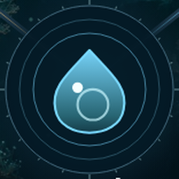
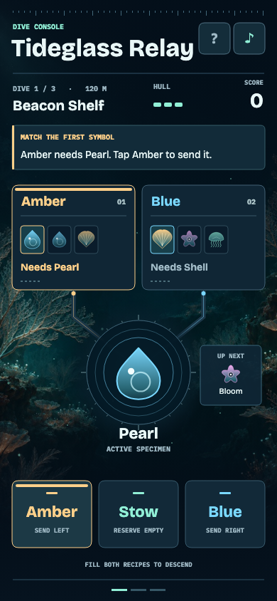
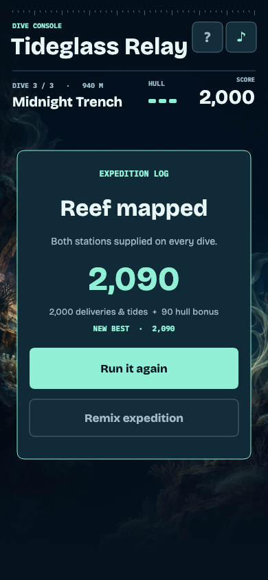

Beacon Shelf
The first Pearl goes to Amber. Bloom waits in reserve until a Shell delivery opens a slot at Blue.
Open first-dive video ↗
Tideglass Relay Gameplay footageDispatch log
Supply two underwater observatories. Read their requests, route each glowing specimen, and keep one in reserve for the delivery you can’t make yet.
Play Tideglass Relay
Recorded play
The first Pearl goes to Amber. Bloom waits in reserve until a Shell delivery opens a slot at Blue.
Open first-dive video ↗Both stations want Pearl. Blue offers 35 extra points. Amber opens a slot for the incoming Shell while the reserve is full.
Open tidal-decision video ↗Design notes
The first dive teaches one send and one swap at a time. Kelp Gate asks the pilot to read ahead. The final tide creates a choice between scoring a bonus and avoiding congestion.
